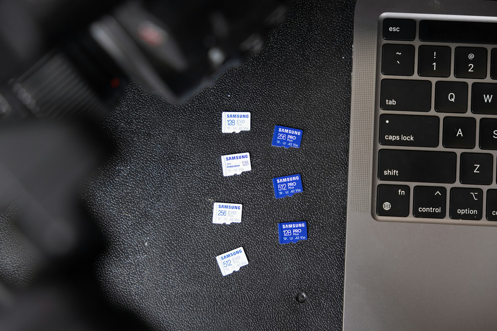
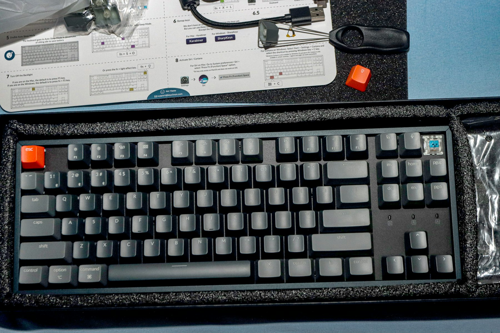

TL;DR
Remote workers often struggle with focus due to distractions. Implement a tailored focus system using tools like Trello and reflect on your progress weekly to enhance productivity.
Remote Professionals Struggling with Focus
If you're a remote worker, whether you’re freelancing or part of a corporate team, you likely find it challenging to maintain your focus. Distractions like household chores, pets, and even the lure of binge-watching your favorite series can impede productivity.
A cluttered workspace isn’t just messy; it dilutes your mental clarity. Many newcomers to remote work underestimate the emotional and environmental hurdles that come with it.
They often believe that working from home should be easier, not recognizing the unique set of distractions they face. The scenery may change from a corporate office to a cozy living room, but the challenge of staying focused remains.
Why the Default Focus Strategies Fall Short
Most common focus strategies—like the Pomodoro Technique—promise improved productivity but often overlook real-world complexities. For instance, if you start a Pomodoro session only to be interrupted by a household item needing repair, you may lose more time than you saved.
Research shows that the average remote worker loses about 21 hours a week due to distractions. This loss doesn’t just accumulate in lost tasks but also stunts mental growth and energy levels.
Each context switch could cost you up to 25 minutes of refocused effort, undermining any seemingly artful time management you apply. Therefore, blindly adopting one-size-fits-all solutions only perpetuates the cycle of distraction and frustration.
Building Your Tailored Focus Workflow

Creating a personalized focus system requires integrating essential components tailored to your lifestyle. Start by implementing time-blocking techniques.
Block out specific time slots for tasks, using a planner or digital tools like Trello or Asana. Here’s a simple workflow to guide you: 1. Identify your peak productivity times (e.g., morning or evening). 2. Dedicate these times to high-priority tasks. 3. Use tools like Focus@Will for distraction-free work music. 4. Set aside regular breaks to recharge, ideally 5-10 minutes every hour. 5. Track your progress weekly to reflect on what’s working and what’s not.
By thoughtfully structuring your day around these principles, you'll find that focus and productivity can thrive.
A 30-Day Focus Challenge to Transform Your Workflow

Consider a 30-day challenge designed to enhance your focus. Each week can have a specific goal:
Week 1: Assess and Adjust Begin with a log of productivity patterns and distractions. Identify high-distraction periods, then gradually rearrange your environment to limit these.
Week 2: Implement Time Management Tools Integrate tools like Todoist for task organization and Google Calendar for scheduling. Spend 15 minutes each day refining your schedule.
Week 3: Focus on Environment Create a dedicated workspace free of distractions. Add ergonomic furniture to enhance comfort, potentially allowing for longer productive sessions.
Week 4: Evaluate and Optimize At the end of the month, review your productivity. Ask yourself: What strategies worked best? What didn’t? Adapt accordingly to refine your workflow for the subsequent month.
Avoiding Common Pitfalls in Focus Systems
Many remote workers sidestep crucial elements while setting up their focus systems. One major mistake is overcomplicating the process. Trying to incorporate multiple apps, programs, and time management methods can overwhelm rather than aid your focus.
Opting for fewer, high-quality tools like Notion or Todoist can provide clarity and consistency.
Another common misstep is neglecting to reassess priorities frequently. If tasks aren’t aligned with your goals, you lose momentum, making you feel busier without being productive.
A flexible system allows for adjustments as needs evolve. Be prepared to iterate on your focus systems. This means taking time each week to reflect on what needs to be revised.
Tools and Techniques to Sustain Your Focus System
As you settle into your new focus system, it’s vital to embrace tools that help sustain momentum. Consider integrating apps like Forest for staying off your phone—a vital weapon against digital distractions.
Use Trello to track ongoing tasks visually. Another useful method is the Two-Minute Rule: if a task takes less than two minutes, do it immediately.
This keeps minor tasks from adding up and cluttering your to-do list.
Monitor your progress weekly and adapt your techniques as required. If a particular tool isn’t facilitating your workflow, don’t hesitate to switch it out for another.
Remember, the key to maintaining focus is flexibility. Reassess monthly to see what’s serving you best and what isn’t.
FAQ
What tools are best for building a focus system?
Some of the best tools include Todoist for task management, Trello for organization, and Forest for minimizing distractions.
How can I track my focus improvements over time?
Utilize apps like RescueTime to monitor your productivity metrics, or simply maintain a daily log of your tasks and focus levels.
This article has been reviewed for practical usefulness and will be updated when new information changes.
Turn this into a workflow
Do not stop at ideas. Pick one workflow, test it for 14 days, then keep only what reduces friction.
Search more articles
Find related tools, workflows, and guides.
Photo credits
- Photo 1: Lorin Both via Unsplash
- Photo 2: Syed Hussaini via Unsplash
- Photo 3: Samsung Memory via Unsplash
- Photo 4: Haseeb Modi via Unsplash
- Photo 5: Visual Karsa via Unsplash